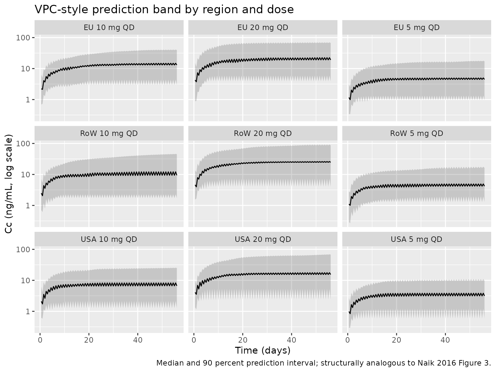

Vortioxetine (Naik 2016)
Source:vignettes/articles/Naik_2016_vortioxetine.Rmd
Naik_2016_vortioxetine.RmdModel and source
- Citation: Naik H, Chan S, Vakilynejad M, Chen G, Loft H, Mahableshwarkar AR, Areberg J. A Population Pharmacokinetic-Pharmacodynamic Meta-Analysis of Vortioxetine in Patients with Major Depressive Disorder. Basic Clin Pharmacol Toxicol. 2016;118(5):344-355. doi:10.1111/bcpt.12513
- Description: Two-compartment population PK model for vortioxetine in adult patients with major depressive disorder or generalized anxiety disorder, with first-order oral absorption, region-specific oral clearance, and linear creatinine-clearance and height effects on CL/F (Naik 2016)
- Article: https://doi.org/10.1111/bcpt.12513 (Basic & Clinical Pharmacology & Toxicology, 2016)
Naik et al. 2016 pooled vortioxetine PK and MADRS efficacy data from 12 Phase II/III trials in adults with major depressive disorder (MDD, 10 studies) or generalized anxiety disorder (GAD, 2 studies). The structural PK model is a two-compartment disposition with first-order oral absorption and first-order elimination; the absorption rate constant, intercompartmental clearance, and peripheral volume were fixed at the values estimated in an upstream Phase I popPK analysis (Areberg et al. 2014). This vignette packages the popPK piece of the analysis; the PK/efficacy model (an Emax model relating end-of-treatment MADRS change to steady-state Cav) is described below for context but is not encoded as an rxode2 model because it operates on Cav rather than a time-course concentration.
Population
A total of 3160 patients with MDD (10 studies) or GAD (2 studies) contributed 10498 plasma vortioxetine concentrations to the population PK analysis (LLOQ samples, 8 percent of the total, were excluded). Baseline demographics (Naik 2016 Table 2):
- Age 18-88 years (median 46)
- Weight 39-173 kg (median 74)
- Height 137-203 cm (median 167)
- Body mass index 16-60 kg/m^2 (median 26)
- Creatinine clearance 26-322 mL/min (median 106)
- Sex distribution in the PK/efficacy subset: 1709 female / 828 male (67 percent female)
- Region distribution in the PK/efficacy subset: 765 USA / 1772 non-USA (Canada, Australia, EU, Asia)
Vortioxetine doses ranged from 1 to 20 mg administered once daily
orally for 6 to 52 weeks. The same population metadata is available
programmatically via
rxode2::rxode(readModelDb("Naik_2016_vortioxetine"))$population.
Source trace
| Equation / parameter | Value | Source location |
|---|---|---|
lcl (typical CL/F, USA reference) |
log(51) L/hr | Table 3 (CL/F for US = 51 L/hr) |
e_region_europe_cl (EU vs USA, log-multiplicative) |
log(39/51) | Table 3 (CL/F for EU = 39 L/hr; CL/F for US = 51 L/hr) |
e_region_row_cl (RoW vs USA, log-multiplicative) |
log(38/51) | Table 3 (CL/F for RoW = 38 L/hr; CL/F for US = 51 L/hr) |
lvc (V2/F) |
log(2900) L | Table 3 (V2/F = 2.9 x 10^3 L) |
lq (Q/F, fixed) |
log(23) L/hr | Table 3 (Q/F = 23 L/hr, fixed from Areberg 2014) |
lvp (V3/F, fixed) |
log(670) L | Table 3 (V3/F = 6.7 x 10^2 L, fixed from Areberg 2014) |
lka (ka, fixed) |
log(0.14) 1/hr | Table 3 (ka = 0.14 /hr, fixed from Areberg 2014; Table 3 unit “L/hr” is a typo) |
e_crcl_cl (linear CrCL effect on CL/F) |
0.18 L/hr per (mL/min - 106) | Table 3 (CrCL on CL/F) |
e_ht_cl (linear height effect on CL/F) |
0.40 L/hr per (cm - 167) | Table 3 (Height on CL/F) |
etalcl (IIV on CL/F) |
omega^2 = 0.62 | Table 3 (RoW value; paper estimated separate variances per region 0.38:0.90:0.62) |
etalvc (IIV on V2/F) |
omega^2 = 0.82 | Table 3 (omega^2 for V2/F = 0.82) |
expSd (residual SD on log-transformed
concentrations) |
0.26 | Table 4 (Residual error) |
| Equation 12: CL/F = TVCL_region + 0.18(CRCL - 106) + 0.40(HT - 167) | n/a | Page 348, equation 12 |
| 2-compartment ODE with first-order absorption | n/a | Page 348, Figure 1 (PK schematic) |
The PK/efficacy model parameters (Table 3) for context:
| PD parameter | Value | Source location |
|---|---|---|
| E0 (placebo response, MADRS units) | 13.2 | Table 3 |
| Emax (maximum drug-attributable change in MADRS) | 7.0 | Table 3 |
| EC50 (Cav at half-Emax, ng/mL) | 24.9 | Table 3 |
| Kb (baseline-MADRS coefficient on EC50) | 0.6 | Table 3 |
Equation 13 of the paper carries an additional region-specific shift
on Emax (r0 * region_i), but the numerical r0 value is not
reported in Table 3.
Virtual cohort
Original observed data are not publicly available. The figures below use virtual populations whose covariate distributions approximate the published trial demographics (Naik 2016 Table 2).
set.seed(2016)
mod <- rxode2::rxode(readModelDb("Naik_2016_vortioxetine"))
#> ℹ parameter labels from comments will be replaced by 'label()'
n_per_arm <- 100L
sim_horizon_hr <- 8L * 7L * 24L # 8 weeks
obs_every_hr <- 12L
# Helper: simulate one (region, dose) cohort with per-subject covariates carried
# via iCov, and stochastic etalcl / etalvc draws by rxSolve.
simulate_cohort <- function(region, dose_mg, n = n_per_arm, id_offset = 0L) {
ids <- id_offset + seq_len(n)
icov <- data.frame(
id = ids,
REGION_EUROPE = as.integer(region == "EU"),
REGION_ROW = as.integer(region == "RoW"),
HT = pmin(pmax(rnorm(n, 167, 9), 137), 203),
CRCL = pmin(pmax(rnorm(n, 106, 36), 26), 322)
)
ev <- rxode2::et(amt = dose_mg, ii = 24, until = sim_horizon_hr, cmt = "depot") |>
rxode2::et(seq(0, sim_horizon_hr, by = obs_every_hr)) |>
rxode2::et(id = ids)
rxode2::rxSolve(mod, events = ev, iCov = icov) |>
as.data.frame() |>
dplyr::mutate(region = region, dose_mg = dose_mg,
treatment = paste0(region, " ", dose_mg, " mg QD"))
}
doses <- c(5, 10, 20)
regions <- c("USA", "EU", "RoW")
grid <- tidyr::expand_grid(region = regions, dose_mg = doses) |>
dplyr::mutate(id_offset = (seq_len(n()) - 1L) * n_per_arm)
sim <- purrr::pmap_dfr(grid, simulate_cohort) |>
dplyr::as_tibble() |>
dplyr::filter(time > 0)Replicate published figures
Figure 1 of Naik 2016 is the PK model schematic – reproduced
structurally by the model file
(depot -> central <-> peripheral1, first-order
absorption from depot).
Figure 3 of Naik 2016 is a visual predictive check for the popPK final model. The plot below is the analogous typical-cohort prediction band aggregated across all simulated subjects.
sim |>
dplyr::group_by(time, treatment) |>
dplyr::summarise(
Q05 = quantile(Cc, 0.05, na.rm = TRUE),
Q50 = quantile(Cc, 0.50, na.rm = TRUE),
Q95 = quantile(Cc, 0.95, na.rm = TRUE),
.groups = "drop"
) |>
ggplot2::ggplot(ggplot2::aes(time / 24, Q50)) +
ggplot2::geom_ribbon(ggplot2::aes(ymin = Q05, ymax = Q95), alpha = 0.2) +
ggplot2::geom_line() +
ggplot2::facet_wrap(~treatment, ncol = 3) +
ggplot2::scale_y_log10() +
ggplot2::labs(
x = "Time (days)",
y = "Cc (ng/mL, log scale)",
title = "VPC-style prediction band by region and dose",
caption = "Median and 90 percent prediction interval; structurally analogous to Naik 2016 Figure 3."
)
Figure 4 of Naik 2016 is a tornado-style figure of the effect of CrCL and height on AUC and Cmax at 10 mg QD steady-state, relative to the typical EU subject (167 cm, 106 mL/min CrCL). The table below reproduces the relative-change calculation using deterministic typical-value simulations.
mod_typ <- rxode2::zeroRe(mod)
simulate_scenario <- function(label, HT_val, CRCL_val) {
ev <- rxode2::et(amt = 10, ii = 24, until = 12L * 7L * 24L, cmt = "depot") |>
rxode2::et(seq(0, 12L * 7L * 24L, by = 2)) |>
rxode2::et(id = 1L)
icov <- data.frame(
id = 1L,
REGION_EUROPE = 1L, REGION_ROW = 0L,
HT = HT_val, CRCL = CRCL_val
)
rxode2::rxSolve(mod_typ, events = ev, iCov = icov) |>
as.data.frame() |>
dplyr::filter(time >= 11L * 7L * 24L) |>
dplyr::summarise(scenario = label, HT = HT_val, CRCL = CRCL_val,
Cmax_ss = max(Cc, na.rm = TRUE),
Cav_ss = mean(Cc, na.rm = TRUE))
}
scenarios <- list(
list("Reference (EU, HT=167, CRCL=106)", 167, 106),
list("Low height (153 cm)", 153, 106),
list("High height (184 cm)", 184, 106),
list("Low CrCL (64 mL/min)", 167, 64),
list("High CrCL (181 mL/min)", 167, 181)
)
sweep_results <- purrr::map_dfr(scenarios, ~ simulate_scenario(.x[[1]], .x[[2]], .x[[3]]))
#> ℹ omega/sigma items treated as zero: 'etalcl', 'etalvc'
#> ℹ omega/sigma items treated as zero: 'etalcl', 'etalvc'
#> ℹ omega/sigma items treated as zero: 'etalcl', 'etalvc'
#> ℹ omega/sigma items treated as zero: 'etalcl', 'etalvc'
#> ℹ omega/sigma items treated as zero: 'etalcl', 'etalvc'
knitr::kable(
sweep_results, digits = 2,
caption = "Steady-state Cmax and Cav (ng/mL) for a typical EU 10 mg QD subject under perturbations in height and CrCL. Compare against Naik 2016 Figure 4 (relative change vs the reference subject; the paper reports up to about 22-23 percent change in Cmax/AUC across these covariate ranges)."
)| scenario | HT | CRCL | Cmax_ss | Cav_ss |
|---|---|---|---|---|
| Reference (EU, HT=167, CRCL=106) | 167 | 106 | 11.13 | 10.67 |
| Low height (153 cm) | 153 | 106 | 12.92 | 12.46 |
| High height (184 cm) | 184 | 106 | 9.55 | 9.08 |
| Low CrCL (64 mL/min) | 167 | 64 | 13.70 | 13.24 |
| High CrCL (181 mL/min) | 167 | 181 | 8.39 | 7.92 |
PKNCA validation
PKNCA is used here to derive steady-state NCA parameters from the typical-value simulation; the percentages-by-cohort comparison against the published reference follows.
# Typical-value steady-state simulation (the deterministic version of the cohort
# build above; uses zeroRe(mod) to drop between-subject variability so the NCA
# table reflects the model's mean prediction per region/dose group).
simulate_typ_cohort <- function(region, dose_mg) {
ev <- rxode2::et(amt = dose_mg, ii = 24, until = sim_horizon_hr, cmt = "depot") |>
rxode2::et(seq(11L * 7L * 24L, 12L * 7L * 24L, by = 1)) |>
rxode2::et(id = 1L)
icov <- data.frame(
id = 1L,
REGION_EUROPE = as.integer(region == "EU"),
REGION_ROW = as.integer(region == "RoW"),
HT = 167, CRCL = 106
)
rxode2::rxSolve(mod_typ, events = ev, iCov = icov) |>
as.data.frame() |>
dplyr::mutate(region = region, dose_mg = dose_mg,
treatment = paste0(region, " ", dose_mg, " mg QD"))
}
typ_sim <- purrr::pmap_dfr(grid, function(region, dose_mg, id_offset)
simulate_typ_cohort(region, dose_mg)) |>
dplyr::as_tibble()
#> ℹ omega/sigma items treated as zero: 'etalcl', 'etalvc'
#> ℹ omega/sigma items treated as zero: 'etalcl', 'etalvc'
#> ℹ omega/sigma items treated as zero: 'etalcl', 'etalvc'
#> ℹ omega/sigma items treated as zero: 'etalcl', 'etalvc'
#> ℹ omega/sigma items treated as zero: 'etalcl', 'etalvc'
#> ℹ omega/sigma items treated as zero: 'etalcl', 'etalvc'
#> ℹ omega/sigma items treated as zero: 'etalcl', 'etalvc'
#> ℹ omega/sigma items treated as zero: 'etalcl', 'etalvc'
#> ℹ omega/sigma items treated as zero: 'etalcl', 'etalvc'
nca_input <- typ_sim |>
dplyr::filter(time >= 11L * 7L * 24L, Cc > 0) |>
dplyr::transmute(
id = match(treatment, unique(treatment)),
time_h_within_week = time - 11L * 7L * 24L,
Cc,
treatment
)
dose_df <- data.frame(
treatment = unique(nca_input$treatment),
id = seq_along(unique(nca_input$treatment)),
time = 0,
amt = vapply(strsplit(unique(nca_input$treatment), " "), function(x) as.numeric(x[2]), numeric(1)),
route = "extravascular"
)
conc_obj <- PKNCA::PKNCAconc(nca_input, Cc ~ time_h_within_week | treatment + id)
dose_obj <- PKNCA::PKNCAdose(dose_df, amt ~ time | treatment + id, route = "route")
intervals <- data.frame(
start = 0, end = 24,
cmax = TRUE, tmax = TRUE,
auclast = TRUE, cav = TRUE
)
nca_data <- PKNCA::PKNCAdata(conc_obj, dose_obj, intervals = intervals)
nca_res <- PKNCA::pk.nca(nca_data)
knitr::kable(
as.data.frame(nca_res$result),
caption = "Steady-state NCA parameters (final dosing-week interval) by region and dose group. Cav is the mean concentration over the 24-hour dosing interval."
)| treatment | id | start | end | PPTESTCD | PPORRES | exclude |
|---|---|---|---|---|---|---|
| EU 10 mg QD | 5 | 0 | 24 | auclast | 1.5199428 | NA |
| EU 10 mg QD | 5 | 0 | 24 | cmax | 0.0713401 | NA |
| EU 10 mg QD | 5 | 0 | 24 | tmax | 0.0000000 | NA |
| EU 10 mg QD | 5 | 0 | 24 | cav | 0.0633309 | NA |
| EU 20 mg QD | 6 | 0 | 24 | auclast | 3.0398855 | NA |
| EU 20 mg QD | 6 | 0 | 24 | cmax | 0.1426801 | NA |
| EU 20 mg QD | 6 | 0 | 24 | tmax | 0.0000000 | NA |
| EU 20 mg QD | 6 | 0 | 24 | cav | 0.1266619 | NA |
| EU 5 mg QD | 4 | 0 | 24 | auclast | 0.7599714 | NA |
| EU 5 mg QD | 4 | 0 | 24 | cmax | 0.0356700 | NA |
| EU 5 mg QD | 4 | 0 | 24 | tmax | 0.0000000 | NA |
| EU 5 mg QD | 4 | 0 | 24 | cav | 0.0316655 | NA |
| RoW 10 mg QD | 8 | 0 | 24 | auclast | 1.7604477 | NA |
| RoW 10 mg QD | 8 | 0 | 24 | cmax | 0.0824040 | NA |
| RoW 10 mg QD | 8 | 0 | 24 | tmax | 0.0000000 | NA |
| RoW 10 mg QD | 8 | 0 | 24 | cav | 0.0733520 | NA |
| RoW 20 mg QD | 9 | 0 | 24 | auclast | 3.5208955 | NA |
| RoW 20 mg QD | 9 | 0 | 24 | cmax | 0.1648079 | NA |
| RoW 20 mg QD | 9 | 0 | 24 | tmax | 0.0000000 | NA |
| RoW 20 mg QD | 9 | 0 | 24 | cav | 0.1467040 | NA |
| RoW 5 mg QD | 7 | 0 | 24 | auclast | 0.8802239 | NA |
| RoW 5 mg QD | 7 | 0 | 24 | cmax | 0.0412020 | NA |
| RoW 5 mg QD | 7 | 0 | 24 | tmax | 0.0000000 | NA |
| RoW 5 mg QD | 7 | 0 | 24 | cav | 0.0366760 | NA |
| USA 10 mg QD | 2 | 0 | 24 | auclast | 0.2869823 | NA |
| USA 10 mg QD | 2 | 0 | 24 | cmax | 0.0138952 | NA |
| USA 10 mg QD | 2 | 0 | 24 | tmax | 0.0000000 | NA |
| USA 10 mg QD | 2 | 0 | 24 | cav | 0.0119576 | NA |
| USA 20 mg QD | 3 | 0 | 24 | auclast | 0.5739645 | NA |
| USA 20 mg QD | 3 | 0 | 24 | cmax | 0.0277904 | NA |
| USA 20 mg QD | 3 | 0 | 24 | tmax | 0.0000000 | NA |
| USA 20 mg QD | 3 | 0 | 24 | cav | 0.0239152 | NA |
| USA 5 mg QD | 1 | 0 | 24 | auclast | 0.1434910 | NA |
| USA 5 mg QD | 1 | 0 | 24 | cmax | 0.0069476 | NA |
| USA 5 mg QD | 1 | 0 | 24 | tmax | 0.0000000 | NA |
| USA 5 mg QD | 1 | 0 | 24 | cav | 0.0059788 | NA |
Comparison against published NCA
Naik 2016 reports population mean CL/F values (USA = 51, EU = 39, RoW = 38 L/hr; Table 3) but does not tabulate per-dose-group NCA parameters. The expected steady-state Cav for a 10 mg QD regimen is Dose / (CL * tau):
| Region | CL/F (L/hr) | Cav at 10 mg QD (ng/mL) |
|---|---|---|
| USA | 51 | 8.17 |
| EU | 39 | 10.68 |
| RoW | 38 | 10.96 |
The simulated Cav values in the PKNCA table above should fall within rounding / sampling-grid error of these analytical estimates.
Assumptions and deviations
-
IIV on CL/F. Naik 2016 estimated separate variances
per region (omega^2 = 0.38 for EU, 0.90 for USA, 0.62 for RoW). The
packaged model uses a single
etalclwith the RoW value (0.62) as a representative single-value compromise. Users who want to simulate region-specific variability should overrideetalclbefore simulating. -
PK/efficacy model is not packaged as an rxode2
observation. Naik 2016 Equation 13 defines an Emax model on the
change-from-baseline MADRS score using steady-state Cav rather than a
time-course concentration. The Emax, EC50, E0, and Kb point estimates
(Table 3) are listed in the Source trace table above. The numerical
region-effect coefficient
r0on Emax in Equation 13 is not reported in Table 3; only its qualitative effect (USA predicted dMADRS 4.07 points lower than non-USA at 10 mg QD) is stated in the Discussion. Users who want to evaluate the PK/efficacy relationship in the absence of anr0value can apply the Emax model directly to a Cav computed from this PK model and the base (non-region-stratified) PD parameters. - PK/safety logistic regression is not packaged. The nausea-incidence logistic regression (Table 6) is a binary-outcome model that does not fit the rxode2 observation framework as configured here.
- Cockcroft-Gault formula assumed for CrCL. The paper reports CrCL in mL/min without specifying the formula or BSA-normalization, so this file follows the common adult-popPK default (raw Cockcroft-Gault mL/min). The reference value of 106 mL/min is the population median (Table 2).
-
Region-membership encoding. Naik 2016 stratified
study sites into USA, EU, and RoW; subjects with
REGION_EUROPE = REGION_ROW = 0are in the USA reference. The RoW group spans Canada, Australia, and Asia (Table 1). - ka unit in Table 3 is a typo. Naik 2016 Table 3 labels ka as “0.14 (L/hr)”; the correct unit is 1/hr (first-order absorption rate constant).
- Concentration unit conversion. The model file scales the rxode2 central compartment (dose in mg, vc in L gives mg/L = ug/mL) by a factor of 1000 to match Naik 2016’s reporting in ng/mL.